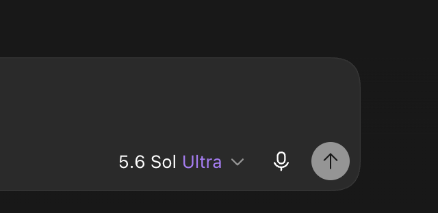

Codex のサブエージェントを、安いモデルから始めて必要なときだけ昇格させる
AGENTS.md に貼る1節と config の3行で、子エージェントが親の高価なモデルを黙って引き継ぐ構造を止めます。検収も実装者とは別のエージェントに担わせます。
リポジトリを開く github.com/yuyatakahashi82-gif/codex-subagent-routing何が変わるか
Codex は既定で、サブエージェントに親と同じモデルと推論強度を継承させます。親を上位モデルで回していると、整形や検索のような軽い仕事まで最高単価で走ります。この規範は起動時にモデル指定を義務化し、タスクの重さに応じた層へ落とします。
導入前
- 子は親の
sol / xhighを暗黙継承 - 反復QAが最上位モデルに固定化（8月実測: ultra 宣言81件のほぼ全てが同一案件）
- 実装した本人が自分の成果物を検収して完了扱い
- 何がどのモデルで走ったか、後から追えない
導入後
- 子は既定で
terra / high。軽量作業はterra / medium - 昇格は失敗1件につき再試行1回まで。解決したら元の層へ戻る
- 完了報告前に文脈を継がない検収エージェントが必ず1本立つ
- 起動ごとに
routing:宣言が残り、ログから集計できる
仕組み
機構はコードではなく文章です。Codex が全セッションで読む ~/.codex/AGENTS.md に、ルーティング表と運用ルール8条を置きます。あわせて config.toml の [agents] に子の既定モデルを設定し、規範が指定を漏らしたときの床にします。
起動直前には必ず次の1行を出させます。これが監査の一次資料になります。
routing: CSVパーサ実装 → gpt-5.6-terra/high — 通常の実装作業のため
| タスク種別 | モデル / 推論強度 |
|---|---|
| 軽量・定型（整形、単純検索、機械的変換） | terra / medium |
| 調査・実装（通常の開発作業） | terra / high |
| 難所、または一度失敗した再試行 | sol / high |
| 高リスクな設計判断・最終ゲート | sol / ultra |
| 推論強度の上げ方（モデルとは別に判断） | medium → high → xhigh、terra は xhigh 上限 |
親は gpt-6-astra、子は terra / sol の2モデルのみ。推論強度を先に上げ、それでも受入基準が未達なら sol へ。モデル名は作成者のプランに合わせた表記で、README の置換表で自分の環境に合わせます。
運用ルール8条の要旨
全文は ROUTING.md にあります。6〜8 は Codex 自身に3巡検収させた文言で、削ると抜け道ができます。2026-09 の改定で「推論強度の選択基準」表を追加し、6 の (a)(b) を「terra での推論強度先行の再試行は sol の利用枠を消費しない」に改めました（Codex 2巡検収・全項目 PASS）。
1. 明示指定の義務
サブエージェント起動時は必ずモデルと推論強度を指定する。暗黙継承での起動は禁止。
2. routing 宣言
起動1件につき1行、タスク・モデル・理由を応答本文に出す。省略不可。
3〜5. 昇格条件と並列数
最初から上位モデルを選べるのは表の条件に該当する時だけ。並列は必要最小限。
6. 昇格を粘着させない
失敗1件につき初回再試行と再検証1回まで。タスク名やサイクル番号を変えても新イベント扱いにしない。
7. ultra の反復利用を制限
単発の高リスク判断か実際の最終ゲートに限る。同種タスクが2回連続 PASS したら降格。
8. 検収は別エージェント
完了報告の前に fork_turns="none" の検収専用エージェントを立て、全項目 PASS のときだけ完了とする。
実測
作成者の環境で 2026年8月の rollout ログを集計した値です。監査スクリプト audit.py で再現できます。
CLI 0.145 の spawn_agent にはモデル引数が無く、宣言しても子は親を継承していました。0.150 で引数が追加され、config の [agents] 既定値と合わせて CLI でも子が terra / high で走ることを確認しています。
親（あなたが話す相手）の設定は上位のままでよい
Codex アプリ右下のモデル選択は プランで最上位のモデルのままで運用します（作成者は 2026年8月は 5.6 Sol / Ultra、2026年9月からは GPT-6 Astra）。この規範は「親を安くする」のではなく「親が起動する子を安くする」仕組みだからです。親を Astra にしても、子は規範どおり terra / sol に落ちることを rollout ログで確認しています。

- 親が high だと委譲しない。同じ3モジュール実装を親 high と親 ultra で走らせたところ、high は自分で全部書き（子 0本）、ultra は3本に分けて委譲した
- 親が ultra でも子は terra / high に落ちる。規範と config の既定値が効くので、高いのは親の思考分だけ。8月の子182件は全て明示指定だった
- 軽い単発作業だけ手動で High に下げる。1ファイルの修正や質問のように委譲の余地が無いときは、セッション単位で切り替える方が安い
導入
前提: Codex 0.150 以降（アプリは同梱、CLI は npm i -g @openai/codex@latest）。
モデル名を置換する
ROUTING.md内のgpt-5.6-terra（3箇所）とgpt-5.6-sol（6箇所）を自分のプランのモデルに変える。AGENTS.md に追記する
置換済みの内容を
~/.codex/AGENTS.mdの末尾に貼る。無ければ新規作成。config に既定値を入れる
config.snippet.tomlの[agents]2キーを~/.codex/config.tomlに追加する。既存の[agents]があればその中に足す。効いているか確認する
サブエージェントを使うタスクを数回走らせ、
python3 audit.pyで明示指定率を見る。全件「親を継承」なら AGENTS.md が読まれていない。
知っておくこと
文章で制御している
hook による強制は Codex 側の trust 承認が要り、未承認 hook は無音で飛ばされます。遵守の一次資料は rollout ログです。
AGENTS.md は短く保つ
規則が増えるほど1条あたりの遵守率が下がります。この節は約24行。全体で100行程度に収めることを勧めます。
親を high にすれば済む話ではない
親の推論強度を下げると委譲せず自分で片付ける傾向が出ます。オーケストレーションさせたいなら親は上位のまま、子を規範で落とす方が筋です。
検収の分離が本命
コスト削減は入口で、ルール8の「実装者と検収者を分ける」構造が品質面の効きどころです。